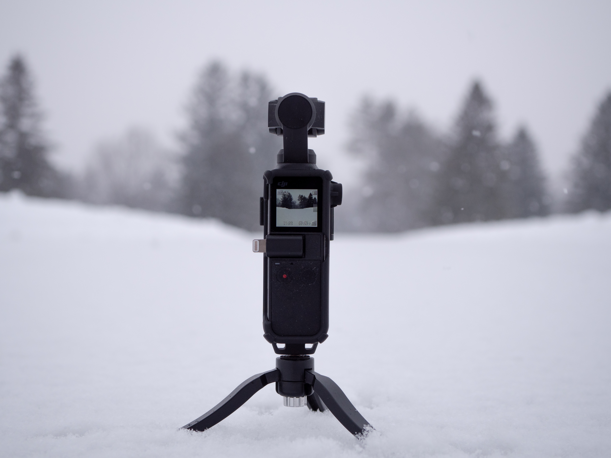

Canon on Friday launched its new video focused Canon EOS C70 camera, the newest addition to the company's Cinema EOS System. The Canon EOS C70 comes with Canon's RF lens mount and is compatible with a new Mount Adapter EF-EOS R 0.71, which the company announced alongside the camera. The EOS is the first camera in the company's Cinema EOS System to be equipped with an RF mount, which makes it compatible with any of the RF lenses from Canon's EOS R System. The EOS C70 can record videos at 4k/120P using its 35mm CMOS DGO (Dual Gain Output) sensor. The Canon EOS C70 is able to capture 4K video in 4:2:2 (10 bit) colour. It is equipped with a DIGIC DV image-processing platform that is capable of high-speed processing, enabling the device to record high frame-rate video at 4K/120P and at 2K/180P. It also houses Canon's Dual Pixel CMOS AF technology that enables Intelligent Tracking and Recognition System. The Canon EOS C70 also comes with Face Detection AutoFocus (AF). Canon EOS C70 also features a headphone jack and USB type-C port. For easy handling, the EOS C70 comes with a removable top-mounted handle. Further, Canon has provided Direct Touch Control function along with various shooting options. Canon has not revealed anything about the EOS C70 pricing in India. In the United States, the camera is has been made available at $5,499 (Rs. 4,05,270 by direct conversion. The Mount Adapter EF-EOS R 0.71x has been priced at $599.99 (Rs. 44,210 by direct conversion).